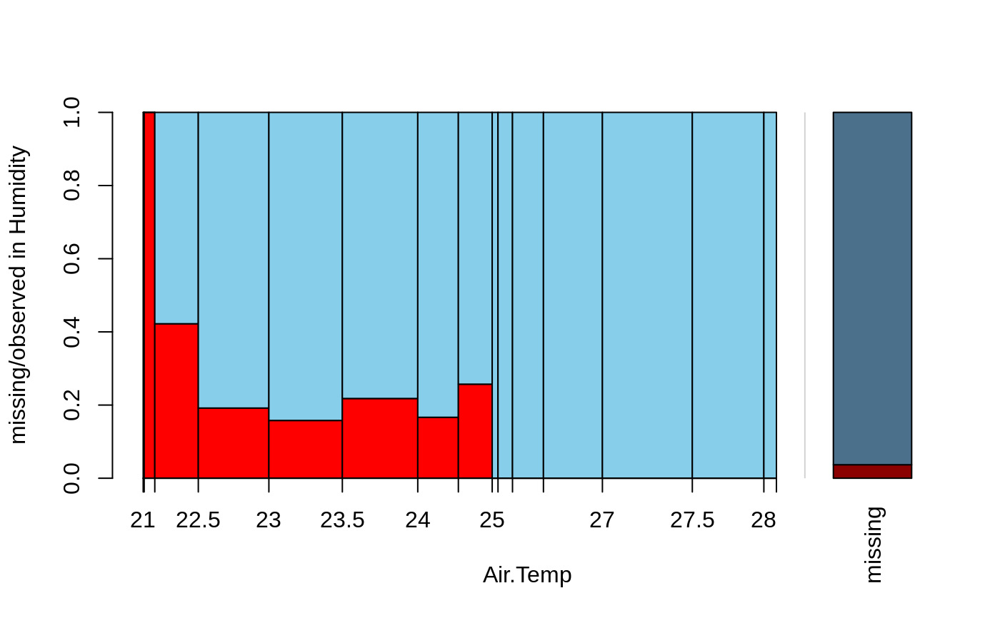
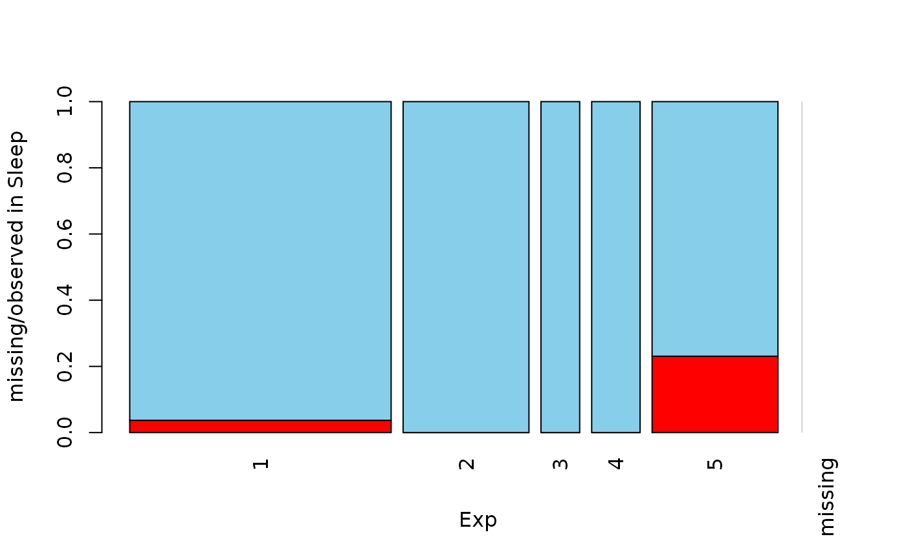
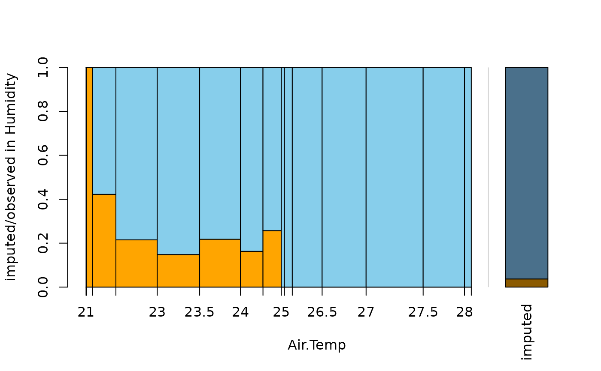
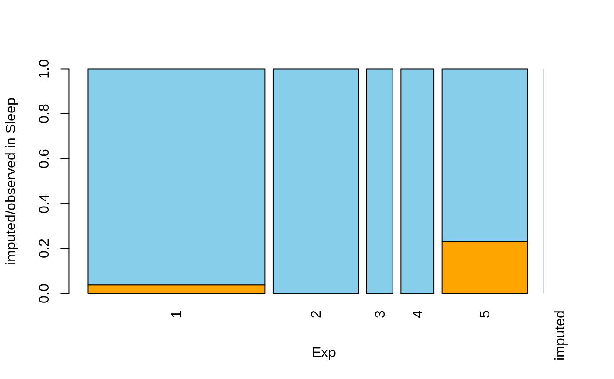

Spineplot or spinogram with highlighting of missing/imputed values in other variables by splitting each cell into two parts. Additionally, information about missing/imputed values in the variable of interest is shown on the right hand side.
spineMiss(
x,
delimiter = NULL,
pos = 1,
selection = c("any", "all"),
breaks = "Sturges",
right = TRUE,
col = c("skyblue", "red", "skyblue4", "red4", "orange", "orange4"),
border = NULL,
main = NULL,
sub = NULL,
xlab = NULL,
ylab = NULL,
axes = TRUE,
labels = axes,
only.miss = TRUE,
miss.labels = axes,
interactive = TRUE,
...
)a vector, matrix or data.frame.
a character-vector to distinguish between variables and
imputation-indices for imputed variables (therefore, x needs to have
colnames()). If given, it is used to determine the corresponding
imputation-index for any imputed variable (a logical-vector indicating which
values of the variable have been imputed). If such imputation-indices are
found, they are used for highlighting and the colors are adjusted according
to the given colors for imputed variables (see col).
a numeric value giving the index of the variable of interest.
Additional variables in x are used for highlighting.
the selection method for highlighting missing/imputed
values in multiple additional variables. Possible values are "any"
(highlighting of missing/imputed values in any of the additional
variables) and "all" (highlighting of missing/imputed values in
all of the additional variables).
if the variable of interest is numeric, breaks controls
the breakpoints (see graphics::hist() for possible values).
logical; if TRUE and the variable of interest is
numeric, the spinogram cells are right-closed (left-open) intervals.
a vector of length six giving the colors to be used. If only one color is supplied, the bars are transparent and the supplied color is used for highlighting missing/imputed values. Else if two colors are supplied, they are recycled.
the color to be used for the border of the cells. Use
border=NA to omit borders.
main and sub title.
axis labels.
a logical indicating whether axes should be drawn on the plot.
if the variable of interest is categorical, either a logical indicating whether labels should be plotted below each cell, or a character vector giving the labels. This is ignored if the variable of interest is numeric.
logical; if TRUE, the missing/imputed values in the
variable of interest are also visualized by a cell in the spineplot or
spinogram. Otherwise, a small spineplot is drawn on the right hand side
(see ‘Details’).
either a logical indicating whether label(s) should be plotted below the cell(s) on the right hand side, or a character string or vector giving the label(s) (see ‘Details’).
a logical indicating whether the variables can be switched interactively (see ‘Details’).
further graphical parameters to be passed to
graphics::title() and graphics::axis().
a table containing the frequencies corresponding to the cells.
A spineplot is created if the variable of interest is categorial and a spinogram if it is numerical. The horizontal axis is scaled according to relative frequencies of the categories/classes. If more than one variable is supplied, the cells are split according to missingness/number of imputed values in the additional variables. Thus the proportion of highlighted observations in each category/class is displayed on the vertical axis. Since the height of each cell corresponds to the proportion of highlighted observations, it is now possible to compare the proportions of missing/imputed values among the different categories/classes.
If only.miss=TRUE, the missing/imputed values in the variable of
interest are also visualized by a cell in the spine plot or spinogram. If
additional variables are supplied, this cell is again split into two parts
according to missingness/number if imputed values in the additional
variables.
Otherwise, a small spineplot that visualizes missing/imputed values in the
variable of interest is drawn on the right hand side. The first cell
corresponds to observed values and the second cell to missing/imputed
values. Each of the two cells is again split into two parts according to
missingness/number of imputed values in the additional variables. Note that
this display does not make sense if only one variable is supplied, therefore
only.miss is ignored in that case.
If interactive=TRUE, clicking in the left margin of the plot results
in switching to the previous variable and clicking in the right margin
results in switching to the next variable. Clicking anywhere else on the
graphics device quits the interactive session.
Some of the argument names and positions have changed with version 1.3
due to extended functionality and for more consistency with other plot
functions in VIM. For back compatibility, the arguments
xaxlabels and missaxlabels can still be supplied to
...{} and are handled correctly. Nevertheless, they are deprecated
and no longer documented. Use labels and miss.labels instead.
The code is based on the function graphics::spineplot() by Achim
Zeileis.
M. Templ, A. Alfons, P. Filzmoser (2012) Exploring incomplete data using visualization tools. Journal of Advances in Data Analysis and Classification, Online first. DOI: 10.1007/s11634-011-0102-y.
histMiss(), barMiss(),
mosaicMiss()
Other plotting functions:
aggr(),
barMiss(),
histMiss(),
marginmatrix(),
marginplot(),
matrixplot(),
mosaicMiss(),
pairsVIM(),
parcoordMiss(),
pbox(),
scattJitt(),
scattMiss(),
scattmatrixMiss()
data(tao, package = "VIM")
data(sleep, package = "VIM")
## for missing values
spineMiss(tao[, c("Air.Temp", "Humidity")])

spineMiss(sleep[, c("Exp", "Sleep")])

## for imputed values
spineMiss(kNN(tao[, c("Air.Temp", "Humidity")]), delimiter = "_imp")

spineMiss(kNN(sleep[, c("Exp", "Sleep")]), delimiter = "_imp")
